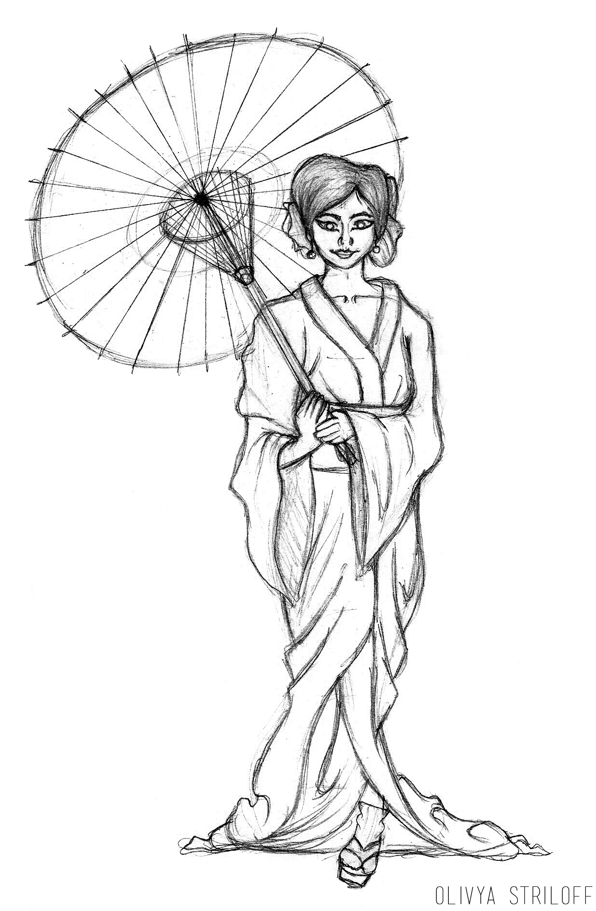
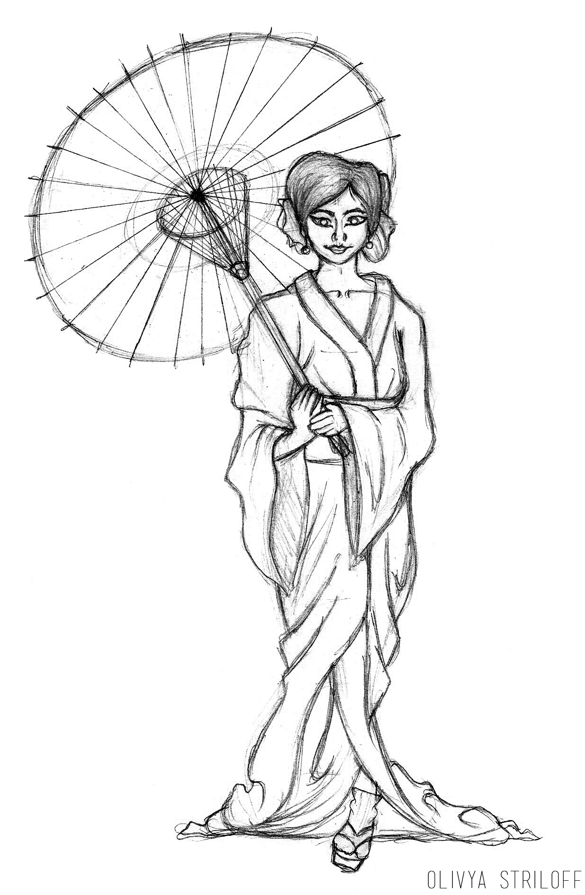

project | Memoirs of a Geisha Poster
purpose | This project was for a graphic design course in which we had to create a movie poster in the style of an artist from a major design movement. This was an individual project.
style | Art nouveau, inspired by the work of Alphonse Mucha.
tools | Pencil + paper, Adobe Photoshop CS4
skills + concepts | Digital colouring, working in a different style (Alphonse Mucha combined with an Asian influence), colour theory, vector paths (for lineart), human anatomy, working for print on a relatively large-scale (final product is a 2x3' printed poster.)
 

{kind=link}
For this project, I decided to be inspired by the style of art nouveau (specifically artist Alphonse Mucha). This art style is characterized by flowing lines, organic elements, relatively muted colours, ornate design work, and frequently women as focal points. The movie I chose was Memoirs of a Geisha; I thought the subject of a geisha would fit perfectly with such a classically "feminine" style.
I began by sketching the drawing on paper, then scanned it and completed the rest digitally. The challenge of working in a different style was interesting - it quickly became clear which aspects of the other artist's work overlap with mine and which don't. Having to work in muted colours was unfamiliar as it's my tendency to work with bright jewel tones. Due to this, I was able to improve the ability to put my natural inclinations aside to emulate a different style.